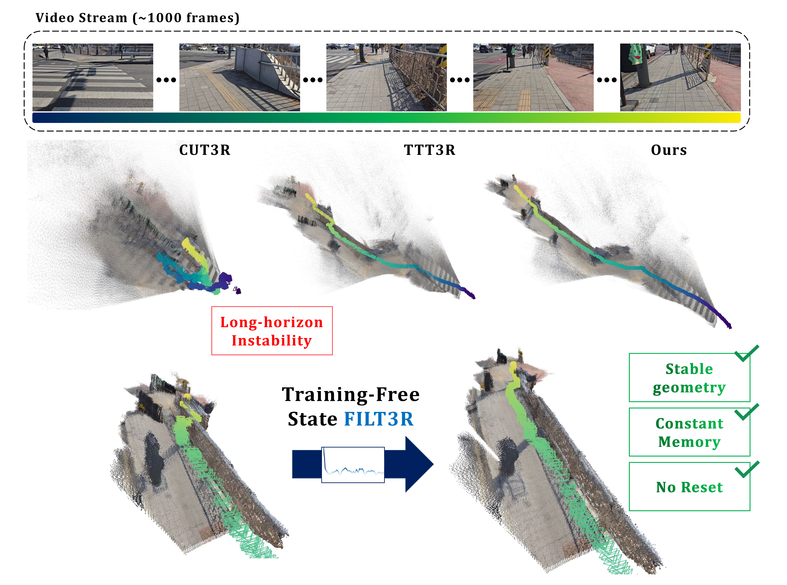
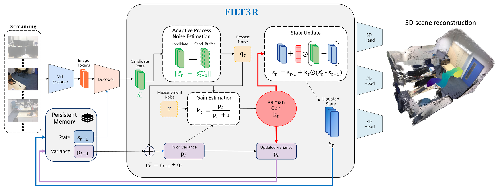
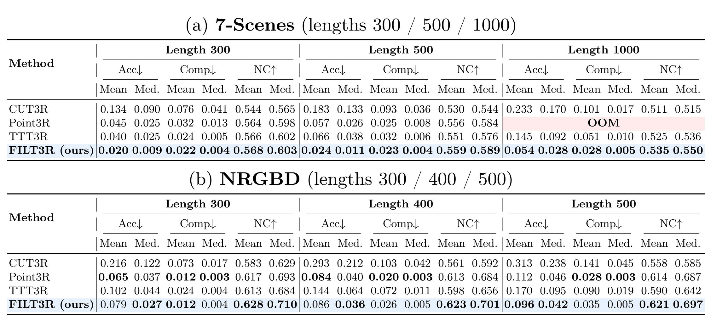
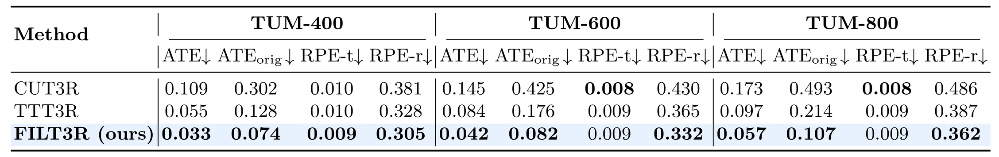
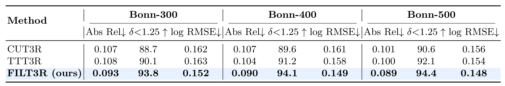
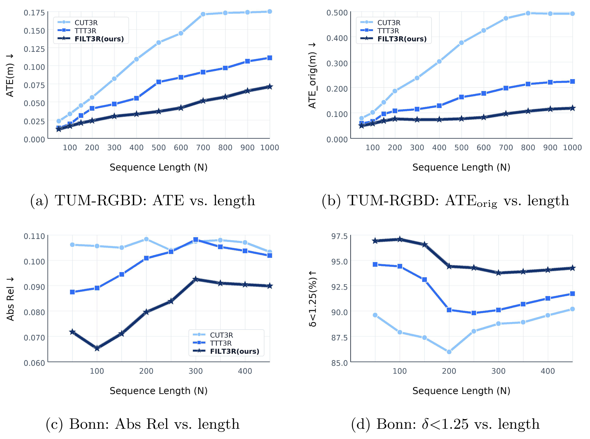
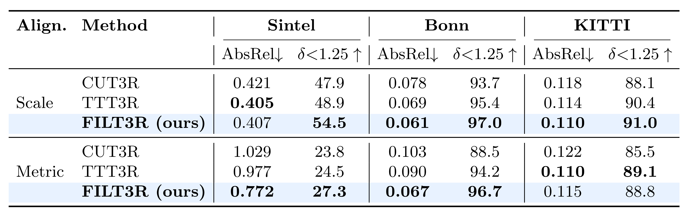
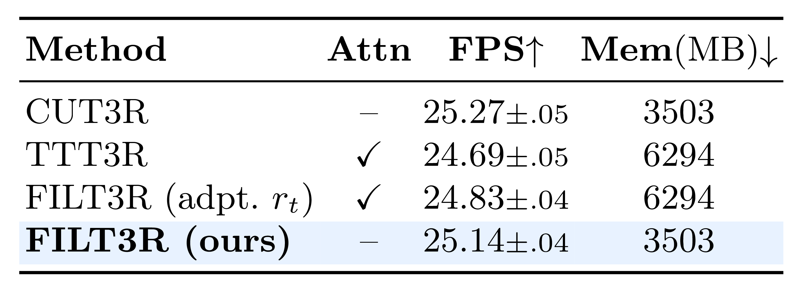
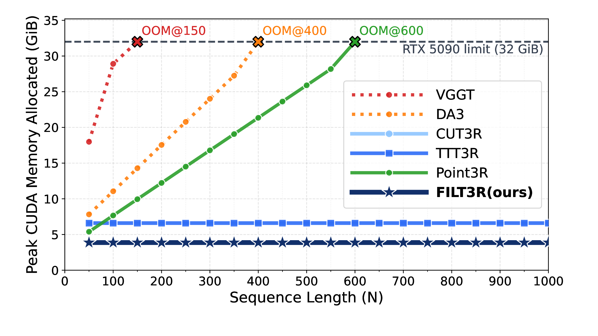
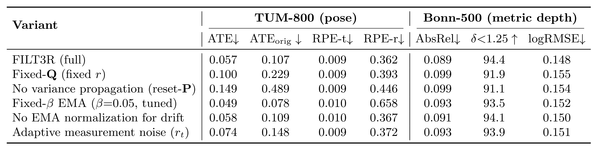

핵심 요약
FILT3R은 streaming 3D reconstruction을 latent-state filtering 문제로 보고, frozen backbone은 그대로 둔 채 token별 Kalman-style gain으로 recurrent memory를 업데이트한다.
FILT3R은 recurrent latent memory \(s_t\)를 belief state로, decoder candidate \(\tilde{s}_t\)를 noisy measurement로 해석해 안정 구간에서는 memory를 보존하고 변화 구간에서는 새 evidence를 빠르게 반영한다.
Latent State Filtering
streaming recurrent state update를 latent token space의 stochastic state estimation으로 재정의.
Adaptive Process Noise
추가 network 학습 없이 EMA-normalized temporal drift에서 token별 process noise를 추정.
Training-free Plug-in
frozen recurrent reconstruction backbone 위에 lightweight filtering layer를 추가.
Long-horizon Stability
constant memory를 유지하면서 reconstruction, camera pose, video depth의 long sequence 안정성을 개선.
uniform overwrite
새 candidate가 persistent state를 빠르게 대체하므로 긴 stream에서 useful history가 사라지기 쉬움.
heuristic confidence gate
confidence signal로 update를 조절하지만 uncertainty를 recursive하게 전파하지는 않음.
uncertainty-propagating gain
prior variance와 measurement noise에서 update coefficient를 계산해 retention과 adaptation을 함께 조절.
논문 상세 정리
아래부터는 기존 논문 내용을 최대한 담은 상세 해석이다. 핵심 흐름에서 벗어나는 배경지식, notation, 부가 자료는 접어두었다.
Problem: 긴 stream에서 latent memory가 왜 흔들리나
FILT3R의 문제의식은 streaming 3D reconstruction에서 persistent latent state update가 너무 단순하면, 긴 video stream에서 drift와 forgetting이 누적된다는 점이다. Recurrent model은 매 frame마다 candidate state를 만들고 기존 memory와 섞지만, update coefficient가 고정되어 있으면 scene이 안정적인지 변화 중인지에 맞춰 반응하기 어렵다.

핵심 병목은 update rule이 history retention과 new evidence adaptation 사이를 상황별로 조절하지 못한다는 데 있다.
긴 video를 처리하려면 full attention이나 모든 frame 저장 없이 constant memory로 돌아가야 함.
candidate를 강하게 반영하면 이전 evidence를 빨리 잊고 reconstruction이 흔들림.
고정 gain은 안정 구간과 scene transition을 구분하지 못함.
token별 uncertainty를 전파해 update coefficient를 online으로 정할 수 있는가?
Related Work 맥락 보기
FILT3R은 streaming/recurrent 3D reconstruction 계열에 속하지만, 핵심 차이는 update gate를 attention heuristic이 아니라 recursive uncertainty propagation으로 계산한다는 점이다.
| 계열 | 역할 | FILT3R와의 차이 |
|---|---|---|
| CUT3R / Spann3R / SLAM3R | bounded-memory online reconstruction 지향 | state update가 long horizon에서 drift와 forgetting에 취약할 수 있음. |
| Point3R / Stream3R / StreamVGGT | streaming reconstruction의 memory/latency 문제를 다룸 | memory 구조가 길이 증가에 민감하거나 update confidence가 명시적 filtering이 아님. |
| TTT3R / TTSA3R / MUT3R | training-free 또는 test-time update를 활용 | uncertainty를 시간 방향으로 누적하는 Kalman posterior가 없음. |
| Kalman filtering | belief, measurement, process noise로 state를 업데이트 | FILT3R은 이를 pixel/pose가 아니라 latent token memory에 적용. |
Mechanism: Kalman-style gain을 latent token에 어떻게 넣나
FILT3R의 방법론은 세 부분으로 읽는 것이 가장 자연스럽다. 먼저 recurrent state를 state-space model로 해석하고, 다음으로 variance와 Kalman gain을 token별로 업데이트하며, 마지막으로 process noise를 candidate drift에서 adaptive하게 만든다.

FILT3R의 update는 기존 interpolation처럼 보이지만, coefficient가 heuristic이 아니라 prior uncertainty와 measurement noise의 비율에서 나온다는 점이 핵심이다.
| 구성 요소 | 무엇을 의미하나 | 왜 필요한가 |
|---|---|---|
| \(s_t\) | persistent latent memory / belief state | 긴 stream에서 축적된 scene evidence를 보존. |
| \(\tilde{s}_t\) | frozen decoder가 만든 noisy candidate measurement | 현재 frame에서 들어오는 새 evidence를 제공. |
| \(p_t\) | token별 posterior variance | stable region에서는 confidence가 쌓여 gain을 낮춤. |
| \(q_t\) | token별 process noise | scene transition이나 큰 latent drift에서 gain을 높임. |
| \(r\) | fixed scalar measurement noise | decoder measurement reliability를 anchor로 고정. |
논문은 decoder candidate를 현재 state의 noisy observation으로 보고, 이전 latent memory가 process noise를 거쳐 다음 state로 이어진다고 둔다. 이때 measurement noise는 frozen decoder의 신뢰도를 나타내며, process noise는 stream 변화량을 나타낸다.
FILT3R은 full covariance를 쓰지 않고 token별 isotropic scalar variance로 근사한다. 따라서 \(Q_t=\operatorname{diag}(q_t)\), \(P_t=\operatorname{diag}(p_t)\)처럼 다루며, update는 elementwise로 진행된다.
Process noise는 scene latent가 얼마나 바뀌었는지를 반영한다. FILT3R은 consecutive candidate state의 token drift를 EMA baseline으로 normalize한 뒤 sigmoid mapping을 통해 \(q_t\)를 만든다.
Numerical stability 조건 보기
논문은 식 자체의 의미뿐 아니라 division instability와 gain spike를 막기 위한 구현 조건도 언급한다. 이 부분은 핵심 update의 보조 조건이므로 접어둔다.
| 조건 | 적용 위치 | 목적 |
|---|---|---|
| small \(\epsilon\) | Eq. (4), Eq. (8)의 denominator | 분모가 너무 작아지는 상황 방지. |
| gain clamp | \(k_t\in[k_{\min},k_{\max}]\) | 새 measurement를 완전히 무시하거나 완전히 덮어쓰는 extreme update 방지. |
| EMA floor | \(\hat{\Delta}_t\ge \Delta_{\mathrm{floor}}\) | 정지 구간에서 normalized drift가 폭주하지 않게 함. |
| fixed scalar \(r\) | measurement noise | adaptivity를 process noise에 집중시키고 measurement reliability를 anchor로 유지. |
Evidence: 어떤 평가가 long-horizon 안정성을 보여주나
FILT3R의 평가는 하나의 metric만 보는 것이 아니라, long-horizon 3D reconstruction, camera pose, video depth, short-horizon regression check, efficiency, ablation을 함께 본다. 중심 주장은 memory를 늘리지 않고도 긴 sequence에서 drift growth를 늦춘다는 것이다.
논문의 evidence는 “정말 길어져도 안정적인가”와 “그 안정성이 단순 trade-off가 아닌가”를 나눠 검증한다.
7-Scenes, NRGBD, TUM-RGBD, Bonn에서 reconstruction/pose/depth 안정성 확인.
Sintel, Bonn, KITTI에서 짧은 sequence 성능을 희생하지 않는지 확인.
runtime/memory와 ablation으로 adaptive \(q_t\), variance propagation의 역할 분리.









결과를 하나로 묶으면, FILT3R은 “긴 sequence에서 memory를 더 쓰지 않고도 안정성을 얻는다”는 claim을 reconstruction, pose, depth, ablation으로 교차 확인한다.
origin-aligned ATE와 length-wise curve가 long-horizon drift 감소를 직접 보여줌.
short sequence depth 결과에서도 backbone 교체 없이 accuracy가 유지되거나 개선됨.
variance propagation과 adaptive \(q_t\) 제거 시 성능이 악화되어 update rule의 의미가 분리됨.
Usage / Limits: 언제 쓰기 좋고 어디서 확인해야 하나
FILT3R은 recurrent streaming reconstruction model을 이미 갖고 있고, 긴 sequence에서 reset 없이 stable memory를 유지하고 싶은 상황에 잘 맞는다. 다만 candidate state의 drift가 scene change를 충분히 반영한다는 가정과 fixed measurement noise \(r\) 설정은 실제 domain에서 확인해야 한다.
논문의 실험 범위와 방법론 가정을 application 조건으로 정리하면 다음과 같다.
| 구분 | 요약 | 이유 |
|---|---|---|
| Good fit | long-horizon streaming 3D reconstruction | state를 저장하되 모든 frame을 다시 보지 않는 constant-memory update가 필요. |
| Good fit | frozen recurrent backbone에 lightweight하게 붙이고 싶은 경우 | training-free filtering layer로 설계되어 backbone 재학습 부담이 작음. |
| Check carefully | scene transition이 잦거나 abrupt motion이 큰 video | normalized drift와 \(q_t\) mapping이 너무 민감하거나 둔감할 수 있음. |
| Limitation | measurement reliability가 token/scene마다 크게 달라지는 경우 | 논문은 fixed scalar \(r\)을 anchor로 사용하므로 domain-specific tuning이 필요할 수 있음. |
Conclusion: FILT3R이 제안하는 관점
FILT3R은 streaming 3D reconstruction의 update rule을 단순 interpolation이나 heuristic gate가 아니라 uncertainty-aware latent filtering으로 바꾼다. 이 관점에서는 memory를 얼마나 유지할지와 새 candidate를 얼마나 반영할지가 prior variance, process noise, measurement noise의 비율로 결정된다.
논문의 의미는 긴 sequence에서 drift를 줄이는 성능 개선뿐 아니라, recurrent latent memory를 해석 가능한 state estimation 문제로 바꿨다는 데 있다. 특히 frozen backbone을 유지하면서도 token별 variance propagation만 추가해 long-horizon robustness를 얻는다는 점이 실용적이다.
느낀점
(진행중...)
향후 계획
(진행중...)
Problem: why does latent memory drift in long streams?
FILT3R starts from the failure mode of streaming 3D reconstruction: a recurrent model needs a persistent latent state, but a simple update rule can accumulate drift or forget useful history over long videos. A fixed update coefficient cannot distinguish stable intervals from scene transitions.
The central bottleneck is balancing history retention and new evidence adaptation under constant-memory streaming.
Long videos require constant memory instead of storing or attending to every frame.
Aggressive candidate updates erase accumulated evidence.
A fixed gain cannot adapt to stable regions and scene changes.
Can token-wise uncertainty determine the update coefficient online?
Related Work context
FILT3R belongs to streaming/recurrent 3D reconstruction, but its key difference is computing the update gate from recursive uncertainty propagation rather than attention heuristics.
| Lineage | Role | Difference |
|---|---|---|
| CUT3R / Spann3R / SLAM3R | bounded-memory online reconstruction | The update can still accumulate drift or forgetting in long horizons. |
| Point3R / Stream3R / StreamVGGT | memory and latency for streaming reconstruction | The memory/update mechanism is not explicit latent Kalman filtering. |
| TTT3R / TTSA3R / MUT3R | training-free or test-time update signals | They do not propagate a recursive posterior uncertainty over time. |
| Kalman filtering | state update using belief, measurement, and process noise | FILT3R applies this idea to latent token memory. |
Mechanism: how is Kalman-style gain applied to latent tokens?
The method has three pieces: interpret recurrent memory as a state-space model, propagate token-wise variance and Kalman gain, and estimate adaptive process noise from candidate-state drift.
The update still looks like interpolation, but the coefficient is derived from the ratio between prior uncertainty and measurement noise.
| Component | Meaning | Why it matters |
|---|---|---|
| \(s_t\) | persistent latent memory / belief state | stores accumulated scene evidence. |
| \(\tilde{s}_t\) | noisy candidate measurement from the frozen decoder | brings in current-frame evidence. |
| \(p_t\) | token-wise posterior variance | reduces gain as confidence accumulates. |
| \(q_t\) | token-wise process noise | raises gain during scene changes or large latent drift. |
| \(r\) | fixed scalar measurement noise | anchors decoder measurement reliability. |
The decoder candidate is treated as a noisy observation of the current state. Measurement noise represents decoder reliability, while process noise represents latent scene change.
FILT3R approximates covariance by token-wise isotropic scalar variance. The update is elementwise with \(Q_t=\operatorname{diag}(q_t)\) and \(P_t=\operatorname{diag}(p_t)\).
Process noise reflects how much the latent scene changes. FILT3R estimates it from consecutive candidate-state drift normalized by an EMA baseline.
Numerical stability conditions
The paper also specifies practical safeguards against division instability and gain spikes.
| Condition | Where | Purpose |
|---|---|---|
| small \(\epsilon\) | denominators in Eq. (4) and Eq. (8) | prevents near-zero division. |
| gain clamp | \(k_t\in[k_{\min},k_{\max}]\) | avoids complete overwrite or complete rejection. |
| EMA floor | \(\hat{\Delta}_t\ge \Delta_{\mathrm{floor}}\) | keeps normalized drift stable in low-motion intervals. |
| fixed scalar \(r\) | measurement noise | keeps adaptivity focused on process noise. |
Evidence: which evaluations support long-horizon stability?
The evaluation is built around reconstruction, pose, depth, short-horizon checks, efficiency, and ablations. The central claim is that FILT3R slows long-horizon drift without increasing memory.
The results separate long-horizon stability from possible short-horizon or efficiency trade-offs.
Reconstruction, pose, and depth on 7-Scenes, NRGBD, TUM-RGBD, and Bonn.
Depth on Sintel, Bonn, and KITTI to test whether stability hurts short sequences.
Runtime, memory, and ablations isolate adaptive \(q_t\) and variance propagation.
Together, the results support the claim that FILT3R improves long-horizon stability without increasing memory.
Origin-aligned ATE and length-wise curves directly probe long-horizon drift.
Short-sequence depth remains competitive or improves.
Removing adaptive \(q_t\) or variance propagation hurts performance.
Usage / Limits: when is FILT3R useful?
FILT3R is most useful when a recurrent streaming reconstruction model already exists and long videos must be processed without resets. It should be checked carefully when scene transitions are abrupt or when measurement reliability varies strongly by domain.
The paper's assumptions and evaluations translate into the following application conditions.
| Category | Summary | Reason |
|---|---|---|
| Good fit | long-horizon streaming 3D reconstruction | constant-memory updates are required. |
| Good fit | lightweight add-on for a frozen recurrent backbone | the filtering layer is training-free. |
| Check carefully | videos with abrupt scene transitions or large motion | the mapping from normalized drift to \(q_t\) may need tuning. |
| Limitation | domains with highly variable measurement reliability | the paper uses a fixed scalar \(r\). |
Conclusion: what viewpoint does FILT3R add?
FILT3R changes the state update in streaming 3D reconstruction from simple interpolation or heuristic gating into uncertainty-aware latent filtering. The balance between retaining memory and accepting a new candidate is determined by prior variance, process noise, and measurement noise.
The paper is important not only because it reduces long-horizon drift, but also because it gives recurrent latent memory a state-estimation interpretation. A frozen backbone can gain robustness by propagating token-wise variance across time.
Takeaway
(Writing in progress...)
Future Work
(Writing in progress...)
Comments